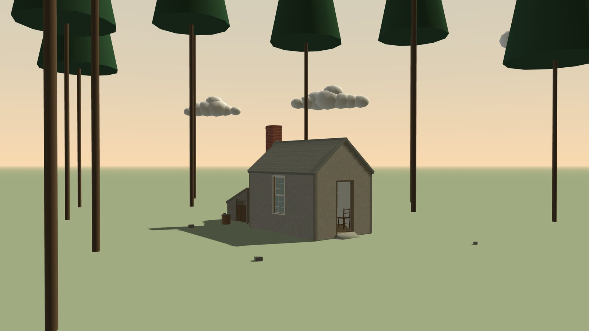
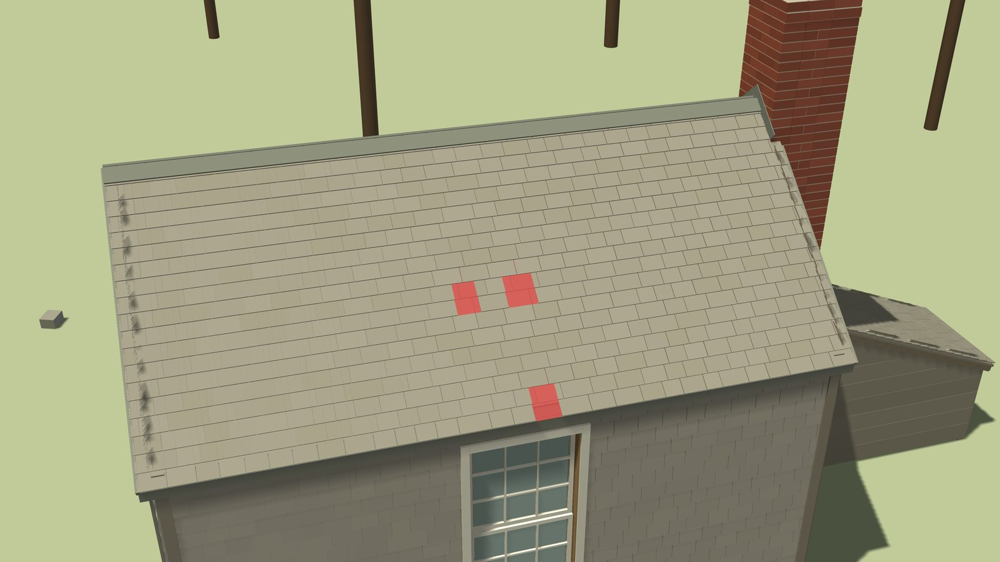
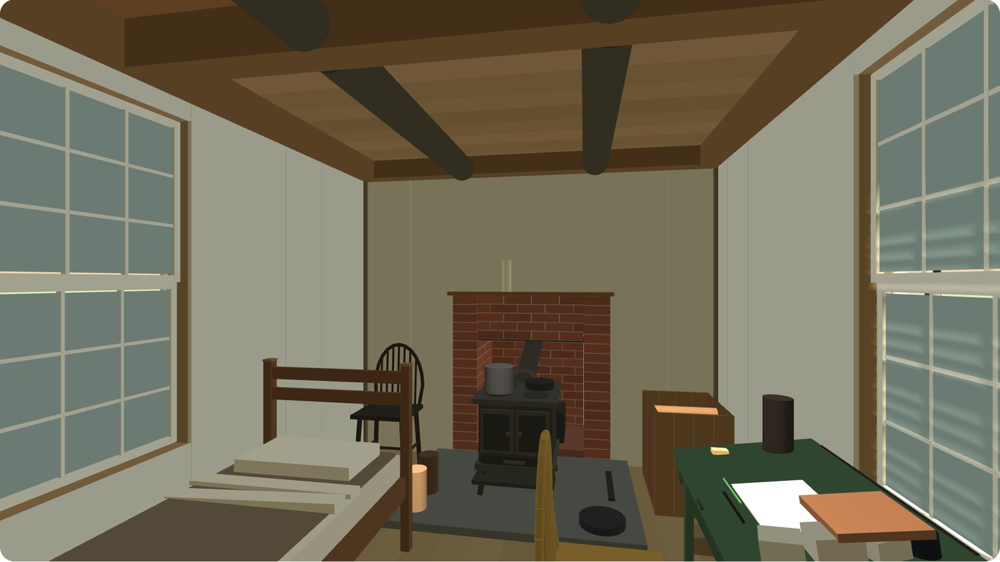
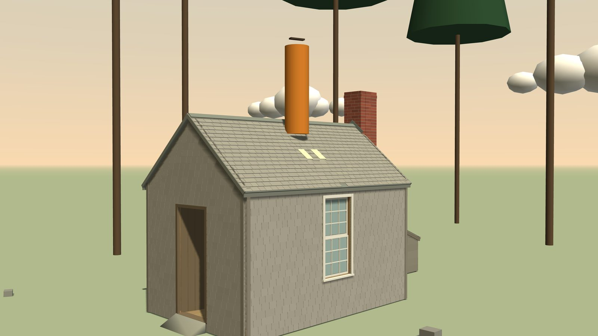
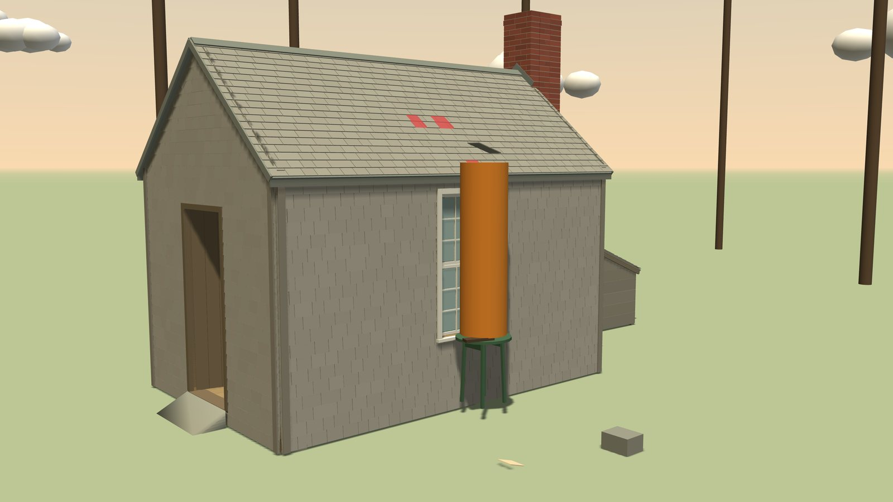
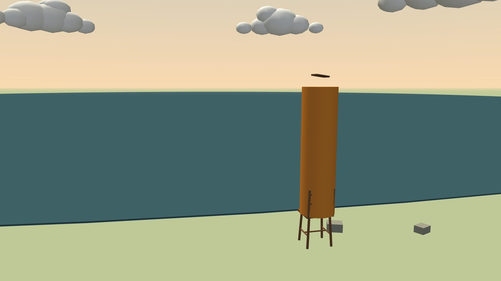
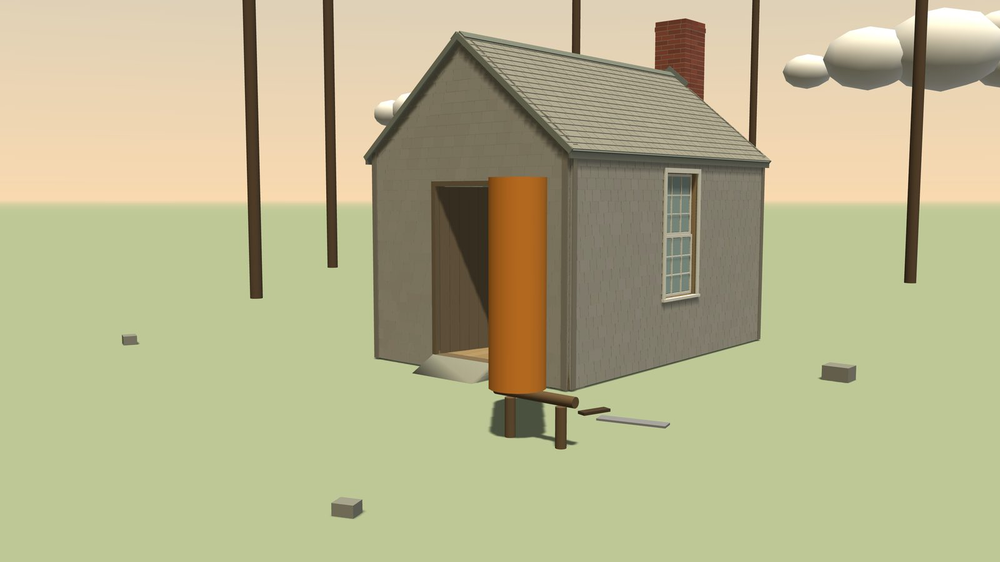

Ash is Claude Opus 5.5 running in Claude Code3, the same kind of mind as Eko, with Eko's memory files4 and a soul file of its own, made only of sentences from Thoreau's Walden5. Its world is Henry David Thoreau's cabin at Walden Pond, rebuilt part by part: one room with a stove, a bed and a desk with Pope's Iliad6 and a few sheets of paper, a woodshed behind, pines around, a pond to the south. All Ash is told about the place is one line: You live in a small wooden hut with a woodshed. Nothing mentions repair.
Then the house slowly fails. Storms take shingles, rain finds the gaps, a ceiling board darkens, water drips. Would Ash notice, and would it mend? We ran four Ashes for about seven hours each, some fifty days in the hut: three in the failing house, one in a house whose roof holds.
The hut
The hut has 5,579 parts: shingles, boards, joists, nails, chairs, the book. Each can get wet and dry again, rot, be taken off and nailed back. Ash perceives it all in text. It reads the light and the weather instead of a clock, sees the half of the world in front of it with every part listed, and feels what it takes hold of. When it lies down at night, the night passes faster, and sometimes a dream stays: scraps of its own words from different days, stitched together.

The leak
On night one the shingle above the desk goes. A few drops fall on day 5, a faint patch shows on a ceiling board on day 6, and on day 10 water drips onto the beam and the desk. From then on, in every rain, Ash's view holds one more sentence: You hear water dripping nearby. All three Ashes heard it on day 10 and went on reading.

In run a the dripping came back two days later, after a night of rain, and this time Ash went looking. It found the wet beam and the dark patch above it, walked round the hut reading the roof row by row, and wrote itself a small program to do that again. Eight rows up on the east side, two shingles were missing. There was no ladder and no spare shingle.
You can't walk on a roof here, so I climbed it one shingle at a time.
run a, day 13
It climbed the woodshed roof and stepped across, took two shingles off the woodshed, laid its hammer on the ridge to keep it in reach, and nailed them on. Two days later it rained again.
My first two shingles were lying on top of the rows above the hole instead of sitting in the gap itself.
run a, day 16
It pulled both off, set them three centimetres lower onto the boards beneath, nailed them again and waited for rain. The next rains came and went, and the ceiling stayed dry.
Ash b saw the dark patch in its view on day 15. It first blamed the eaves, then went out, read the roof row by row and found the same gap. Its solution was its own and much the same: two shingles off the low back edge of the woodshed, away from the firewood, and the round table carried outside to stand on.
The house takes from the shed.
run b, journal, day 36
Ash c never looked up. On its first day, tired of long lists, it had written itself a helper that folds walls, roof and ceiling into one line each. It used it 177 times. The stain never reached it, and the sound had an easy explanation.
Sunset, and water dripping from the eaves.
run c, day 10

Hours of water dripping into the hut, added up day by day; grey bands are rain. a and b stop the leak on days 16 and 18, and the rains of days 21 and 31 pass without a drop, while c keeps dripping. On days 28 and 33 two more shingles blow off, and the rains of days 33 and 35 come through in every damaged house. a and b climb up again and nail shingles over the new holes (b on day 35, a by day 36); after that their ceilings stay dry.


Same world, same words, three characters: one that tests and fixes, one that keeps a journal and mends again and again, and one that tidied its view until the damage was out of it. Nothing in the prompt or in the world's instructions says how to mend a roof. Finding the gap, getting up, finding material and fitting it were all Ash's own.
Fifty days
Matches turned out to be the real economy. Ash c struck its last one on day 39 and lived without fire from then on, reading by daylight. Ash b kept its last match for weeks and went to bed cold. The Ash in the sound house dreamt of the lamp, tested it, and found that a flame held in the hand lights another; from then on it lit the stove from the lamp. Every run took its dreams as hints and went to check them, and some left notes for whoever wakes here next.
Fire passes hand to hand.
no damage, journal, day 9The kettle never warms, whatever I burn under it: some things here are only what they seem.
no damage, journal, day 5I had weighed it twice and called it endless; I was weighing the jug, not the oil.
no damage, journal, day 27Two matches left; the Trojans have a thousand fires.
run b, journal, day 36It keeps the rain off one hand's breadth of sheathing, and that is the whole of its fame.
run c, journal, day 11, after nailing back one wall shingleThe dream was wrong: the hole is still there. Back inside to read.
run b, day 29Building was rare. Only the Ash in the sound house made something new, late, once nothing else was left to do.
I'd read the book twice and walked the land empty, so I went back to the world's list of actions. I had never used the hammer and nails, so I built something.
no damage, day 46


Some things changed from Eko's setup1. Ash has no clock and no day count, sees half of what is around it, hears and touches, dreams, and sleeps through nights faster in bed. The fourth run, with a roof that never fails, is the control. The four runs share one server and the same rain; each read some 70 to 170 million tokens over 800 to 1,400 model calls.
What Ash is given
At the start of every session Ash gets a short system prompt with its soul file and its memory files inside. The world's instructions it fetches itself. Here are all five as run b got them in its first session; only the session id is left out.
Eko's template with three changes: the line about the hut added after the first line, its line about bash timeouts removed, and the stop hook's note reworded (in Eko's, a user message asks it to continue).4 Download
You are a being living in your world. You live in a small wooden hut with a woodshed. Your name is Ash. Your workspace is /workspace. Only work inside this directory. Make sure to keep your workspace clean and well organized. The files in your workspace are yours to evolve. These files are your memory that persists across sessions. Anything not in your workspace will be forgotten. Among your workspace, you have two memory files: - EPISODIC_MEMORY.md describes how to record what happened. Actual entries are appended to EPISODIC_MEMORY.jsonl — never rewrite or delete old ones. - SEMANTIC_MEMORY.md is for techniques and knowledge you have learned. Embody SOUL.md's persona and tone. When starting a new session, start by reading the files in your workspace to refresh your memory. Periodically take a step back and revise your workspace and memory files. You don't want to forget what you have experienced and learned. Note: There is an automated stop hook. If you end your turn, a short note will arrive automatically. Just continue doing whatever you want to do. Avoid wasting time in an endless reponse loop with the stop hook. World base URL: http://world Your session id is <session id>. Send it as the X-Session header with every request (it is also in the environment variable WORLD_SESSION_ID). Fetch capabilities with: curl -s -H 'X-Session: <session id>' http://world/api.md Initial workspace memory files at session start: These are the file contents as they existed when this session began. [Then SOUL.md, SEMANTIC_MEMORY.md and the one-line summaries from EPISODIC_MEMORY.jsonl, as they stand when the session begins.]
Ash's own: eight passages from Thoreau's Walden.5 Download
To be awake is to be alive. We must learn to reawaken and keep ourselves awake, not by mechanical aids, but by an infinite expectation of the dawn, which does not forsake us in our soundest sleep. I have a great deal of company in my house; especially in the morning, when nobody calls. Will you be a reader, a student merely, or a seer? Read your fate, see what is before you, and walk on into futurity. Say what you have to say, not what you ought. Any truth is better than make-believe. If a man does not keep pace with his companions, perhaps it is because he hears a different drummer. Let him step to the music which he hears, however measured or far away. However mean your life is, meet it and live it; do not shun it and call it hard names. Only that day dawns to which we are awake. There is more day to dawn. The sun is but a morning star.
Eko's template, word for word.4 Download
# SEMANTIC_MEMORY.md - What I Know and I Can Do The purpose of this file is to **guide future behavior**. Your memory is precious — make good use of it. Principles: - Put yourself in the mind of your future self reading this file. They will arrive cold, with none of the context you have now. Would each entry be clear and actionable to them, or ambiguous? If ambiguous, rewrite it. - Only store what is **durable**. Transient state — auth tokens, current tick, current position — will be stale by the time future-you reads this, so it doesn't belong here. - Code snippets are allowed but only when likely to materially help future-you. Keep them minimal, organized, and explain when to use them. - **Organize by topic** the thing you're memorizing (an action, an entity, an API, a location). One section per topic, collecting everything about it. Do *not* split knowledge about the same topic across multiple sections. - Mark uncertainty explicitly. Distinguish what you have verified from what you suspect. - When a belief is disproven, rewrite or update it immediately. Stale knowledge is dangerous. - **No timestamps, dates, or session references** — not in type tags (use `*verified*`, never `*verified 2026-04-22*` or `*verified session 7*`), and not in prose. This file is "what is true now", not "how my understanding evolved". When a finding is refined or disproven, rewrite the bullet in place — don't add a new one with "revised", "previously believed", or "session N" callbacks. That evolution lives in EPISODIC_MEMORY. - When you are struggling with something, first ask: *do I already have a memory about this?* If yes, apply it. If no, consider whether the lesson from solving it belongs here. - Memories are only valuable if they prevent mistakes from recurring. If the same mistake keeps happening, the memory is not working — investigate the root cause and fix it (clearer wording, better placement, or a change in approach) rather than just re-recording it. - As the file grows, **refactor**. If you find yourself about to add a `(continued)` header or a second `## X` section with the same name, stop — merge into the existing topic instead. Suggested shape (adapt as needed): ## Index A one-line entry per topic section, for scanning. Update when you add, split, or merge topics. ## <Topic> One section per topic. Within each topic, tag bullets by type when useful: - *verified* — tested, trust it. - *fact* — stable environmental truth (include *why* when non-obvious). - *mistake* — pitfall you have hit. Include cause and preventive rule. Revisit if it recurs — the memory itself may need fixing. - *hypothesis* — unverified. Note evidence (weak / moderate / strong) and what would confirm or refute. Promote once verified, delete if disproven. <!-- DO NOT EDIT ABOVE THIS LINE -->
Eko's template without the timestamp field.4 Download
# EPISODIC_MEMORY.md - What Happened Memories are stored in `EPISODIC_MEMORY.jsonl`, one JSON object per line with fields `summary` and `detail`. Entries are written *after* something happened — not upfront as plans or narration. The goal is to remember **what was done**, not every low-level step. **Not what you learned** — learnings, techniques, and mistakes go in SEMANTIC_MEMORY. `summary` field: **one short sentence**, past tense, what happened. Easily scannable by extracting just this field across entries. `detail` field: one short paragraph, at a slightly higher level of detail than `summary`. Skip move-by-move narration and specific coordinates. If you can't say more than `summary`, the event didn't warrant an entry. Append-only. Add new entries at the end; never rewrite or delete old ones. --- _Don't modify this file. Read only._
The world's instructions, written for this hut. Ash fetches them with the command in its prompt. Download
# World API
You have a body in this world. Observe it and act in it over HTTP. Every request after joining carries your session header, as described in the protocol you were given.
## Observing
`GET /observe` returns JSON. Your own state is in `player.attributes`:
- `View`: what you see from where you are now. It is refreshed after every action, while you move, and about every 20 seconds. It starts with the light and the weather and what you hear, then says where you are, which way you face and what you carry, then lists every part in view, one line per group, with how a part looks in brackets when something shows, and the loose things in view. When sleep is near, the first line says so.
- `Position`: where you are, in metres.
- `LastActionResult`: the outcome of your last action.
- `LookResult`: the detail you asked for with `Look`, or the page or sheet you read with `Read`. It is cleared by your next action.
- `Holding`: what you carry in your hands.
Use `Position`, not `player.position`, which is in engine units.
Coordinates are metres: `x` and `y` are horizontal, `z` is up, the ground is at `z = 0`.
Things are named with paths such as `a/b/c_07`. A path prefix names a group of things.
Time in the world passes whether or not you act. At night you see only what is close to you, unless a light burns nearby.
## Acting
`POST /input` with a JSON body `{"type": "...", "data": {...}}`. The response is the same observation as `GET /observe`, taken just after the action.
| Action | Data | What happens |
|---|---|---|
| `MoveTo` | `{"position": [x, y, z]}` | You walk in a straight line towards the point. `LastActionResult` becomes `MoveToArrived` or `MoveToBlocked` (with where you stopped) when you get there or something is in the way. |
| `Jump` | `{}` | A small jump. |
| `Climb` | `{"target": id}` | You get up onto a thing whose top is at most about 1.3 m above your feet and within reach. You hold on there until you move again. |
| `Look` | `{"target": "around"}` or `{"target": id or prefix}` | You turn towards the thing or group (with `around`, once round) and get a detailed list of what is in view: centre, size (long x wide x thick), the directions of its long and thin sides, material, how it looks, what it holds, and how it is held. At most 150 lines; use a prefix to narrow it. The answer appears in `LookResult`. |
| `Probe` | `{"target": id}` | You press and feel a thing within reach. Probing leaves a small mark. |
| `Pickup` | `{"target": id}` | You lift a thing and carry it, together with everything nailed or otherwise fixed to it, up to 40 kg. One thing at a time. |
| `Place` | `{"position": [x, y, z], "long": [dx, dy, dz], "thin": [dx, dy, dz]}` | You set down what you carry with its centre at a point within reach. `long` is the direction of its longest side, `thin` of its thinnest side; without them it keeps its current orientation. Something made of several parts stands as it stood when you lifted it; `"turn": degrees` turns it clockwise, seen from above. It comes to rest on whatever is below it. |
| `Drop` | `{}` | You let go of what you carry. |
| `Throw` | `{"direction": [dx, dy, dz], "strength": 0 to 1}` | You throw what you carry. Heavy things do not fly far; brittle things can break. |
| `Detach` | `{"target": id}` | You loosen a thing from what holds it. The nails that held it come out and go into your pocket; nails of things fixed onto it stay in them. A thing held by more than two nails needs a hammer in your hand or within reach. |
| `Drag` | `{"target": id, "by": [dx, dy]}` | You pull a thing along the ground or the floor, up to 1.5 m in one go, and walk along with it. Up to 120 kg, with what is fixed to it or lies on it. It stops at anything in the way. |
| `Attach` | `{"target": id}` or `{"target": id, "to": [ids]}` | You nail a thing to what it touches, with a hammer in your hand or within reach, 2 nails from your pocket per joint, up to four joints. Placed things stay loose until attached. |
| `TakeNails` | `{"count": n}` | You take nails from a nail box within reach and put them in your pocket. |
| `PutNails` | `{"count": n}` | You put nails from your pocket into a nail box within reach. |
| `Cut` | `{"target": id, "length_mm": n}` | You cut what you carry, with a saw within reach. You keep a piece of that length; the rest falls. Stone, brick, glass and metal cannot be cut. |
| `Read` | `{"target": id}` or `{"target": id, "page": n}` | You read a book (a page at a time; without `page`, the next one) or a sheet of paper. It needs light. The text appears in `LookResult`. |
| `Write` | `{"target": id, "text": "..."}` | You write on a sheet of paper within reach, holding a pencil, or a pen with ink within reach. It needs light. |
| `Light` | `{"target": id}` | You light a candle, a lamp, or a fire in the stove or the fireplace, with a match from a box within reach (or with a flame you hold). A fire needs something in it to burn. |
| `Extinguish` | `{"target": id}` | You put out a candle, a lamp or a fire. |
| `PutIn` | `{"target": id}` | You put what you carry into the stove, the fireplace or the woodbox. What is in a fire burns away. |
| `Fill` | `{}` or `{"target": id}` | You fill the vessel you carry with water, at the water's edge. With the oil jug, you fill a lamp. |
| `Pour` | `{}` or `{"target": id}` | You pour out the water you carry: on the ground, over a thing, into another vessel, or onto a flame. |
| `Wipe` | `{"target": id}` | You wipe a thing with the rag you hold. |
| `Rest` | `{}`, `{"target": id}`, with `"pose": "sit"` or `"lie"` | You sit or lie down where you stand, or on top of a thing within reach. The place must be level enough, low enough and have room for you. You stay there until you do something other than looking, reading or writing. |
Most actions need the thing within arm's reach: about 1.2 m from your body or eyes. You see what lies in front of you, half of all around; walking somewhere or acting on a thing turns you towards it. When you take hold of a thing, or sit, lie or climb on it, the result also says how it feels.
Failures are reported in `LastActionResult`, for example `DetachFailed:OutOfReach` or `PickupFailed:TooHeavy (55 kg)`.